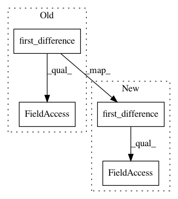

5d8b81e16143d6eea9e86a586fe737854c03c772,linearmodels/tests/panel/test_firstdifference_ols.py,,test_firstdifference_ols_weighted,#Any#,83
Before Change
clusters.loc[entity] = np.random.randint(9)
ols_clusters = clusters.copy()
index = mod.dependent.first_difference().dataframe.index
ols_clusters = ols_clusters.loc[index]
res = mod.fit(cov_type="clustered", clusters=clusters)
After Change
clusters = data.vc1
ols_clusters = mod.reformat_clusters(data.vc1)
fd = mod.dependent.first_difference()
ols_clusters = ols_clusters.dataframe.loc[fd.index]
res = mod.fit(cov_type="clustered", clusters=clusters)
ols_res = ols_mod.fit(cov_type="clustered", clusters=ols_clusters)
In pattern: SUPERPATTERN
Frequency: 3
Non-data size: 4
Instances
Project Name: bashtage/linearmodels
Commit Name: 5d8b81e16143d6eea9e86a586fe737854c03c772
Time: 2017-04-07
Author: kevin.k.sheppard@gmail.com
File Name: linearmodels/tests/panel/test_firstdifference_ols.py
Class Name:
Method Name: test_firstdifference_ols_weighted
Project Name: bashtage/linearmodels
Commit Name: 5d8b81e16143d6eea9e86a586fe737854c03c772
Time: 2017-04-07
Author: kevin.k.sheppard@gmail.com
File Name: linearmodels/tests/panel/test_firstdifference_ols.py
Class Name:
Method Name: test_firstdifference_ols
Project Name: bashtage/linearmodels
Commit Name: 07dd6825429f371300a2ffbdc2978422823958e7
Time: 2017-04-26
Author: kevin.k.sheppard@gmail.com
File Name: linearmodels/panel/model.py
Class Name: FirstDifferenceOLS
Method Name: fit